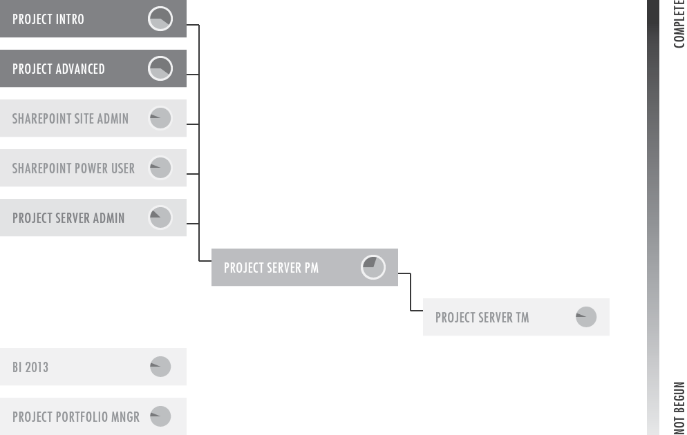

The future of the book is the blurb.
Microsoft has updated Project, Project Server, and SharePoint. We need to produce new editions of our books in order to remain relevant, to cover the new features available, and to provide solutions to the depricated features.
Under the management of Pam Greensky, the first, preliminary editions Introduction to Scheduling with Microsoft Project and Advanced Scheduling with Microsoft Project have been written. Project MVPs Cindy Lewis, Ellen Lehnert, and Tim Runcie will still need to perform a thorough functional review and check spelling and grammar.
Tim is currently working on the Project Server Administrator's Guide book. Cindy will begin working on the Project Server Project Manager's Guide before the end of the month.
All of our books have now been modularized. This allows us to quickly spice together cutsom books from multiple modules (and to distribute modules independent of larger works).
Based off of our proof printings of the preliminary editions of the Project 2013 books, we're refining the page layout Advisicon 2.0 books.
As we are cleaning up the layout of our printed books, we're also working on our digital distribution capabilities with ebooks. To do this, we have instituted a writing template for our authors, are improving the code generation afforded by our layout software, and are designing a mobile specific layout.
We had a wonderful outlier in January: a high count and high sales. Since then, things have been slower, but relatively steady.
The highest count performers were beginner's books: PPM, Project, and Team Member Project Server.